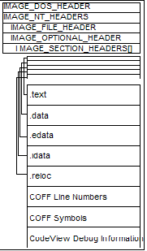
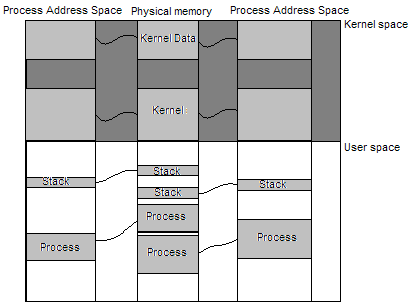
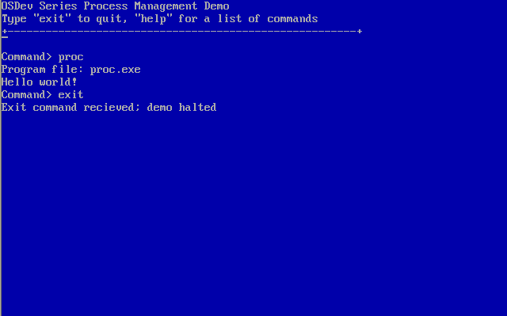

Process Management
This chapter details the topics of process management and multitasking. The previous chapters have built a basic monolithic operating system capable of now supporting tasks. A lot of decisions made up to this point in developing the OS was to sacrifice complexity for simplicity; while still providing some detail in the complex designs. I will continue this trend in this chapter; the demonstration presented at the end by no means represents the only way to develop an OS. This chapter will cover the following topics:
- Processes
- Threads and tasks
- Looking inside a process
- Process management
- Scheduling
- Linking
Process management - Introduction
Process management is the process by which operating systems manage processes, threads, enable processes to share information, protect process resources and allocate system resources to processes that request them in a safe manner. This can be a daunting task to the operating system developer and can be very complex in design. Lets take a closer look at each one of these.
Processes and threads
We will primarily be discussing processes and threads throughout the rest of this chapter. Process creation implies loading an executable image and creating at least one execution path (thread) to run it.
Inter-Process Communication
Inter-Process Communication (IPC) is a technique employed by many operating systems to allow communication between processes. This is typically done by message passing: the process would request to send a message to another process to the operating system which would send and queue the message to the other process if it is able to. IPC can be implemented in a number of different ways, the most common being files, pipes, sockets, message passing, signals, semaphores, shared memory, and memory mapped files. Operating systems may implement any or all of these methods of IPC. IPC is heavily used in some hybrid and monolithic kernel designs but is arguably most prominent in micro kernel designs.
This chapter primarily focuses on that of process and thread creation and thus will not focus on that of IPC. We may discuss IPC a little later but probably as an addition to this chapter.
Process protection
Loading multiple processes into the same address space poses a fundamental problem: both processes can read or write each other. The simple solution to this is loading the processes into their own virtual address spaces and mapping them to separate locations in the physical address space. The process can request to create more threads: this is on a per-process bases so all threads share the same address space as the process as you will soon see.
Process protection is also employed by mapping processes with the least amount of control that they need: for example, processes that must be in kernel land should be in kernel space, processes that do not need to be in kernel land should be in user space.
We will be utilizing both of these in this chapter when creating processes. They will be mapped into user space and in their own virtual address space. This means the process will not be able to access kernel pages (so cannot trash kernel stack or structures) nor can the process trash another process as they are in separate address spaces.
Resource allocation
Resource allocation means the safe manner of handing system resources (such as files or device handles) to processes that request them. Due to the early state of the series OS, there really is no resources that we need to worry about at this time. As things are needed, though, process resources that have been allocated are typically stored within the process control block. If you are wondering why we need to manage system resource allocation, consider the case in a multi-tasking environment when two processes try to open the same file at the same time and write to it.
With that in mind, we will be focusing on the creation of processes and threads in the following sections. We begin by providing a clear definition of what these are and what constitutes a process.
Processes
A process is an instance of a program, or part of a program, in memory. Processes are executed by the operating system or executive in order to perform complex tasks: such as play a movie or video, play a game, or even run the editor used to write this text in. In essence, one could say a process is a program – but a program could contain multiple processes. For example, a basic program to display a string might be built in its own program file. Loading the program might yield the operating system or executive to load other program files – dynamic loading of shared libraries containing executable code for the process to call and use. All of these program files are a part of the same process; its why a process can have an instance of multiple program files or even multiple instances.
Processes may execute in emulated or hardware environments by a central processing unit (CPU) or multiple CPUs or CPU cores. CPUs that support hyper threading or parallel pipeling can also execute multiple instructions from different processes at the same time. This means that the process may not be executed in a sequential manner (one instruction at a time) but may be executed in a number of different ways depending on the environment and hardware configuration. The IA32 CPU family defaults with these features disabled. This means that at computer startup, the CPU will execute all instructions one at a time (although might cache them in an instruction cache buffer). However if the operating system or executive were to enable these features for a process, the process and system must be designed in a way to be multi-processor safe. This one is an advanced topic however and is very easy to run into errors and thus will be discussed in an advanced chapter. We can break some processes apart into threads and tasks. We will look at these next.
Threads and tasks
Threads can be defined as a single execution path inside of a process. For example, in the most basic of an example we can have a program that just displays a message and returns:
#include <stdio.h>
int main (int argc, char** argv) {
printf (“Hello, world!”);
return 0;
}
In this example, the process has a single thread: it begins at main() and the thread ends when the process terminates. (Do note however that this might not actually be the case: The runtime library that calls main() might contain threads.) Lets look at a multithreaded example:
#include <stdio.h>
static int _notExit = 0;
int thread (void* data) {
while (_notExit) {
/* do something useful */
}
return 0; /* thread terminates returns to runtime which calls TerminateThread */
}
int main (int argc, char** argv) {
CreateThread (thread);
printf (“Hello, world!”);
return 0;
}
In this example, CreateThread calls the operating system to set thread() as a new flow of execution. After CreateThread() if called, thread() will be called by the operating system or executive and execution will continue inside of both thread() and main() simultaneously until one of them terminates. Notice that all processes are threads, but threads are not processes. A process can contain a single thread or many threads. Threads inside of a process can access and share the same global variables; although some compilers support thread-local variables as well.
Operating systems that support threads are said to be multi-threading capable. Examples of such operating systems include Windows, Linux, and Mac OS. Tasks are synonymous with threads. Tasks represent a task for the operating system or executive to execute. Thus any operating system that supports multithreading effectively supports multitasking. It is important to note though that not all multitasking operating systems supporting multi-threading.
What exactly is a process? We have currently defined a process as an instance of a program or a part of a program; lets elaborate on this definition by taking a deeper look inside of a process.
Looking inside a process
If we were to break apart a process, all we will see at the most fundamental level is code and data. Given ones' experience in programming, this makes sense: All programs are simply instructions instructing the CPU to perform an action or operating on data. It is understandable why programmers tend to separate the “data” part of the program from the “code” part in order to facilitate program development. .data and .text (for program code) are two of what later became many different types of sections within a program binary. Sections not only help program development but also facilitates standards for how different types of things can be stored within program binaries.
We will first discuss program sections and how they can be placed within a process address space. We can then discuss symbolic information, debugging information, export and import tables, and how they can be used.
Program sections
We have already looked at two sections (or segments): .data and .text. The program file contains these and other sections. The operating system or executive can load each section in the address space for the process to execute correctly. Sections can also be relocated during load time. This allows the operating system or executive to find the best location for each section if it needs to and update the process accordingly. However, different program file formats support different things so not all program file formats support section relocating.

The Portable Executable (PE) file format is the primary program file format used by the Windows operating system. The PE file format supports many different sections for code, data, resource data, symbolic information, manifest data, and more. Each section is stored within the binary file written by the linker or compiler. In order to see how it is stored in the file, we need to take a look at the format of the PE file format.
The above is an image of what is inside of the PE executable file. We can load an image into memory and parse the file contents as any other type of binary file so long as the sections do not need to be relocated. This is how the series boot loader is able to load our kernel image: The kernel in the series does not require section relocation so the boot loader can just load the file, locate the entry point in the headers, and call it directly. This is easy to do:
/* Get entry point from PE headers */
IMAGE_DOS_HEADER dosHeader = (IMAGE_DOS_HEADER*) imageBase;
IMAGE_NT_HEADERS ntHeaders = dosHeader->e_lfanew;
IMAGE_OPTIONAL_HEADER optHeader = &ntHeaders->OptionalHeader;
void (*EntryPoint) (void) = (void (*EntryPoint) (void) ) optHeader->AddressOfEntryPoint + optHeader->ImageBase;
/* Call program entry point */
EntryPoint ();
In a similar manner, we could parse the other headers and extract any type of information we want from the file: section information, debugging information, symbolic information, and more. Kernel debuggers and user mode debuggers typically use symbolic and debugging information to facilitate debugging. In other words, you could build your PE image with debugging information (or without); if you build it with you can attach a debugger to it remotely to perform source level debugging.
Having different sections inside of the executable files makes it easier for parsing and writing executable files. They provide a consistent location and way to store the data and reference them from headers. For example, in PE files there is a .rscs section that stores the actual resources (string table, bitmap images, program info, cursor, etc.) In order to locate a resource, we just need to parse the directory entry for it at OptionalHeader->DirectoryEnteries [IMAGE_DIRECTORY_ENTRY_RESOURCE] which gives us an RVA (relative pointer) to the resource tree structures that point to the resource data inside of the .rscs. section. The point is that the executable format has a specific format defined by the PE file specification. It has a specific format so there is a standard way to get information from the file.
Many compilers such as GCC and CL (Microsoft's compiler) is also capable of programmer-defined sections. In other words, programmers can also define their own section names and put whatever they need into that section. Operating system kernels and executives typically define special sections for different purposes. For example, both Linux and Windows define a special .INIT section containing one time initialization code and data. When initialization completes, the operating system kernel can free the section and re-use it for other things.
Common sections
There is a set of section names and types that are common to different object files and even architectures. It is important to be able to recognize these sections and what they are used for. They are as follows:
- .text
- .data
- .bss
- .rodata
The .text section is the common section name given to the section that contains program code. This is also known as the code segment. This section might be read only on some systems in order to prevent writing to it; however this prevents self modifying code (which is typically not recommended anyways.)
The .data section, as its name suggests, contains static and global data used by the program. It is always writable.
The .bss section is a part of the .data section and is typically used for statically allocated data that are initialized to zero. The .bss section is always cleared by the operating system loader so all of the data in it is set to zero. The name “.bss”, according to Wikipedia, initially stood for Block Started by Symbol in the United Aircraft Symbolic Assembly Program. The .bss section contains all null variables and so does not take any space in the object files.
The .rodata section contains read only statically allocated data. It is typically common in Linux and Unix environments.
Notice that there is no section for temporary data. Recall that temporary variables are stored on the stack and thus do not need to be stored in the program file.
Custom sections in Microsoft Visual C
Microsoft's compiler provides several pragma directives that programmers can use to control where to place data and code in specific sections and making custom sections. These are:
- alloc_text
- code_seg
- const_seg
- data_seg
- bss_seg
- init_seg
- section
The program loader does not need to worry about any special sections that the program has, all it needs to concern itself with is loading them into memory. The program (and thus programmer) has the responsibility.
Here is an example of using alloc_text for adding a function to a special section.
error_t DECL mmInitialize (SystemBoot* mb) {
return SUCCESS;
}
#pragma alloc_text (“.init”, mmInitialize);
In the above example, mmInitialize will be added to the section .init. This is a useful tactic used by some operating system kernels and executives. For example, the operating system kernel or executive can add or initialization code and data to a special .init section. Once initialization completes, the operating system can free that section to get some of the memory back.
Symbolic information
Symbolic information is the symbols that programmers give as names of addresses. For example, when we call a function like printf() how can the compiler and linker know what to do? Lets take a closer look.
“printf” is a symbol for a function defined in a library. When we call “printf()”, the compiler adds the symbol printf to a symbol table managed by the compiler during the build process. Notice that the name of the function is a symbol. In a similar way, static and global variables are also symbols. We can argue that any name we give to an address (like a label in assembly language) is a symbol. Thus a symbol has two things: A name and an address.
If we build without linking the library containing the code for printf, the compiler is unable to output the final executable because it will not be able to translate the entire code to machine language. In other words, like an assembler, it cannot do anything with code like the following unless it knows what the function is:
call _printf
An assembler cannot completely assemble this instruction unless it knows the address of the symbol _printf. The assembler can not know the address if it does not know anything about the symbol. To resolve this, we declare that the symbol is external and the assembler or compiler outputs an object file instead of an executable file. It partially translates the instruction to machine code but in a form like this:
0xe8 _printf
This allows us to use another program—a _linker—_to resolve these symbols. The linker looks at the export symbol tables in the different object files and libraries for the symbol “_printf”. If it is found, the linker can get the address of the function code and update the machine code with that address to properly link and output a final executable program. If the symbol is not found, it is unresolved and the linker gives us the famous “unresolved external symbol” error.
Symbolic information in the executable image can be used by debuggers to display human-readable information (functions and variable) names but at the cost of a bigger program file size.
There are different ways to “store” additional information about a symbol in the symbol name itself. This differs based on the build environment and calling convention. The standard C calling convention is CDECL which just prepends an underscore to all names. So, for example, if we call “printf()”; its CDECL symbolic name is “_printf”. C++ symbolic names differ between compilers and store a lot more information then just a name (such as return data types and operand types, namespace, classes, template names, etc.) Due to this, C++ symbolic names are said to undergo name-mangling. For example, the function “void h(void)” in CL (Microsoft's compiler) translates to the symbolic name**?h@@YAXXZ**. I will not go into the details of the name mangling format here.
Notice something interesting here. C symbolic names do not store anything about return data types or operands, but C++ symbolic names due to name mangling do. This is understandable and presents one of the many differences between the languages: With C compilers, you can call functions with different operand types or number of operands without error (although perhaps a warning when it can be detected); C++ compilers do.
Export and import tables
Symbols in a program library or object file can be exported for use by other libraries or programs. Exported symbols just tell the compiler and linker to add the respective symbol to the export table. Program files and shared libraries (Windows DLL's) may export symbols for use by other programs or debuggers. In a similar way, program files can request to import a symbol for use. This is where we can complete our printf() example above.
The Microsoft C Runtime Library is a shared library loaded with the program file. The operating system or executive can tell what DLL's a program file needs to operate by looking at the program import table. By default, CL (Microsoft's compiler) links with the Microsoft C Runtime Library import static library that contains the import table so the symbols are added and the respective DLL is included in the table. The operating system or executive must load all of the shared library files the program requires into memory if not already done so and update the program files Import Address Table (IAT) with the addresses of the functions in these other DLLs. The Microsoft C Runtime Library DLL that gets loaded not only includes the code for _printf but also exports the symbol _printf, so the operating system links them during runtime. (We will discuss that in more detail later.)
Thus, when we call “printf()” from a program file, this calls a jump table which calls the updated IAT address which calls the function “_printf” in the C runtime library DLL.
So far we have covered processes, threads, tasks, and took a look into what program files are and how they work. The goal of this chapter is to be able to load, execute, and manage multiple processes and tasks. Lets look at that next.
Process Management - In Detail
Process Management is the management of processes in a software system. We have defined a process earlier as a program or a part of a program in memory. To manage processes, then, means managing multiple instances of programs in memory in a collaborated environment. This is typically a requirement in modern operating systems and implemented in the kernel or executive. Operating systems that support a form of process management is considered to be a multitasking operating system.
Representation
In order to manage a process, an operating system designer needs to determine how to best represent a process given OS design criteria and required system resources. A process consists of the following:
- Image of the executable in memory (machine code and data);
- Memory in use by the process and its virtual address space
- Descriptors used to represent the processes
- Process state information (registers, stack, attributes, etc.)
The operating system is required to manage the processes and allocate system resources in a fair manner to the processes that request them. Lets look at each of these closer.
Image of executable in memory
Executable programs are stored as files on disk to facilitate program loading and managing. To load a program, an operating system loader loads the file into memory. The loader must also be able to understand the type of file (it must be an executable the operating system can work with) and possibly support features of these file types (like resources and debug information.)
The image of the executable in memory is the current representation of the machine code and data of the image and how it appears in memory at any given time. We use the term “image” here to represent a “snapshot” of whats in memory. For example, its like taking a camera looking at a big array of bytes and taking a photo. The array of bytes can be machine code, data, or neither – we don't know nor care. Only the program instructions know.
Some data in the program image might be useful though to other programs or even the operating system itself. This is data the program image itself does not usually use; for example, the program file can contain debugging information. A debugger can be then attached to the program and use that information.
In short, the operating system needs to be able to load the file from disk into memory somewhere in order to execute it. This can be like just loading the file into memory “as-is”. The operating system or another program can then get any useful data from the program file that it may need.
Memory in use by the process and its Virtual Address Space
Processes typically have calls to dynamically allocate memory and use stack space just like the operating system does. The operating system is required to allocate space for a process stack and heap memory for the process to use. For example, the operating system typically allocates a default stack size to all processes. The executable file for the process however can also tell the operating system to allocate a larger stack space if the process needs it.
The process heap is different. While the stack is allocated by the operating system before executing a process, the heap is not. Instead, each process has its own heap allocator in user mode. This is implemented in the C Runtime Library (CRT) using the familiar interface of malloc, free, realloc, brk, and sbrk functions. Programs that are linked with the CRT can call these functions to allocate memory. Programs that are not linked with the CRT however must implement their own heap allocator or link with another library that does.
The CRT Runtime implements a user mode heap allocator (typically a free list). The C function malloc might call brk, which calls the OS using the System API. The C function brk calls the OS in order to allocate more virtual memory to expand the heap when needed.
In short, the user mode heap works like this: The program calls malloc, which might call brk, which calls the OS using the System API to allocate virtual memory for the heap. The malloc and free family of functions implement their own user mode heap allocator. They only call the OS to allocator or free memory from the virtual address space.
In preemptive multitasking, all processes have their own virtual address space. This means every process must have their own Page Directory and associated page tables. In order to manage process specific information, we use a process control block (PCB). Lets look at that next.
Descriptors used to represent processes
A Process Control Block (PCB) is a data structure used to store the information about a process or task. The PCB contains information such as interrupt descriptor pointers, Page Directory Base Register (PDBR). Protection level, running time, process state, process flags, VM86 flag, priority, and Process ID (PID). PCBs may contain a lot more information – its really OS specific.
Operating systems may used a linked list of PCB's to manage processes. When creating a new process, the operating system needs to allocate a new virtual address space, load and map the image, and attach a new PCB structure to the list. The scheduler uses the PCB list in determining what process to execute and to store the current state.
Process State Information
Process state information includes the entire register state of a process, in-memory state, Input/Output request state of the process at a given time. The process state is stored in the PCB when switching tasks. This is done by the heart of a multitasking operating system: the scheduler. Additionally, the current running state of the process is used to control the execution of processes by the operating system.
In the most simple case, a state is either RUNNING or NOT RUNNING. With this model, a process just created as stored in a NOT RUNNING queue and only labeled as RUNNING when it is in execution. The process that is NOT RUNNING may still exist in memory but in a waiting state until either the RUNNING process terminates or is interrupted by a process dispatcher inside of the scheduler.
In a three-state process management model, processes may either be RUNNING, READY, or BLOCKED. When a RUNNING process requests access to something that requires the process to wait (such as an I/O request) the operating system may change the process from RUNNING to BLOCKED. When the request can be performed, the process may be moved to either RUNNING or READY states. Processes in the READY state just means the process is ready for execution by the process dispatcher. Processes that are RUNNING are already being executed.
The final model is a five state process management model. This model utilizes five states: SUSPEND BLOCKED, BLOCKED, SUSPEND READY, READY, and SUSPENDED.
Scheduling
The scheduler is the component of an operating system kernel or executive that is responsible for task switching and CPU usage allocation. Operating systems employ scheduling algorithms to determine what task to execute next. Common scheduling algorithms used include but are not limited to First-in First-out, Shortest remaining time, Fixed priority preemptive, round-robin, and a multilevel queue. Possibly the most common algorithm used by both Windows and Linux is a multilevel feedback queue.
Basic process management support
Now we can implement basic process management support. The goal is simplicity so we will not be implementing an advanced multilevel feedback system with vm86 task support, I/O resource allocations, etc but will focus on a simpler but still efficient scheduler.
In order to do this, lets look at the goals of what we must do in order to add support:
- Load and parse an executable image into memory;
- Manage a list of PCBs for processes;
- Support user mode tasks;
- Support multiple virtual address spaces
- Allocate stack space for each process; default size can be 4k;
- Select a scheduling algorithm and implement task switching
These are the goals in order to support multitasking. The processes will be user mode processes. Multitasking, however relies on both process management and scheduling. Due to this, we will focus on building the framework to support multitasking but will only allow one process with one thread for this chapter. This will be extended in the next chapter as we implement a scheduler.
Process Control Block
The PCB structure for our system will be simple:
#define PROCESS_STATE_SLEEP 0
#define PROCESS_STATE_ACTIVE 1
#define MAX_THREAD 5
typedef struct _process {
int id;
int priority;
pdirectory* pageDirectory;
int state;
/* typedef struct _process* next; */
/* thread* threadList; */
thread threads[MAX_THREAD];
/*
note: we can add more information, such as the following:
-LDT descriptor [if used]
-Processor count being used
-User and kernel times
-Execution options, etc
*/
}process;
We can add more to this structure, but the above is really all we need. Notice that it stores the process ID (PID), priority and virtual address space. The two commented entries are provided for completeness only; in a typical OS they should be linked lists of processes and threads. This, however, requires a kernel heap allocator which we have not written. For simplicity, we will store 5 thread objects in the process as an array.
The final thing we need is a way to handle threads. All processes have at most one thread which starts execution at the entry point.
typedef struct _thread {
process* parent;
void* initialStack;
void* stackLimit;
void* kernelStack;
uint32_t priority;
int state;
trapFrame frame;
}thread;
The thread structure stores general information about a thread in a process. Note that the structure stores a pointer to the parent process and information about the thread stack, priority, state (if its running or not), and a trap frame. The trap frame stores the current register state of a running thread.
typedef struct _trapFrame {
uint32_t esp;
uint32_t ebp;
uint32_t eip;
uint32_t edi;
uint32_t esi;
uint32_t eax;
uint32_t ebx;
uint32_t ecx;
uint32_t edx;
uint32_t flags;
/*
note: we can add more registers to this.
For a complete trap frame, you should add:
-Debug registers
-Segment registers
-Error condition [if any]
-v86 mode segment registers [if used]
*/
}trapFrame;
We will not be using the trap frame structure much in this chapter since we are not implementing multi-tasking yet. We will, however, be using the trap frame structure more in the next chapter as we develop a scheduler to store the current state of each thread.
Virtual Address spaces
A complication occurs when we want to support multiple virtual address spaces. Each process address space consist of the entire 4GB address space where the kernel code and data is located at 2GB. When we switch processes, we need to be able to switch address spaces—but only the low 2GBs of the address space (“user land”). In other words, lets say a user mode process is running. Somehow we need to be able to call the scheduler in the kernel to be able to switch tasks. Ah, but this means our kernel code needs to be in that same address space! If its not, its an instant crash.
To resolve this problem, we have to do just that—map our kernel code into every process address space. You might be wondering how this can be done. However it might become more clear when we consider that multiple virtual addresses can refer to the same physical frame in memory. In other words, we can map the kernel stack and code into both of the address spaces. Please see the following image.

The above image displays two virtual address spaces with the physical address space. Notice how the location of the process stack and code share different locations in physical memory. In other words, they are mapped to the same basic virtual address location to different physical address frames using our virtual memory manager. Lets consider the kernel for a moment. The kernel starts up in an environment with a single address space. It maps itself into its own address space during the initialization process. We need to still be able to map the kernel space into the other process address spaces as well to prevent problems. The kernel is already mapped into its own address space and is located at some place in physical memory. This means the kernel can re-map itself to the other process address spaces as well.
In the series kernel, the kernel maps itself from 1MB physical to 3GB virtual. The kernel must map 3GB region of all processes to 1MB physical, then, in order to map itself into each process address space. The kernel and kernel stack must be mapped to the same location in every process address space.
Operating systems can also map a portion of the kernel into the process address space rather then the entire kernel. This is quite common in large systems.
Address Space Management
We need to be able to work with being able to map virtual pages from different address spaces. More specifically, we need to be able to do the following:
- Create a page table from any page directory
- Map any physical address to virtual address from any page directory
- Get the physical address of any virtual mapping from any page directory
- Create new address spaces
The Virtual Memory Manager in the series currently does not support this functionality. We can quickly implement them, though, so lets do so now.
Creating a page table
To create a page table, all we need to do is to allocate a free frame (recall that a page table consist of 1024 PTEs which is 4096 bytes, the size of a page) and add it to the frame of a PDE in the page directory. Virt >> 22 just allows us to get the directory index from the virtual address. If the PDE at pagedir [directory_index] is 0, then we know that this page table does not exist and so we allocate it using the physical memory manager. If it does exist, no need to allocate. We finish by clearing the page table which effectively sets its pre sent bit to 0 (not present.)
int vmmngr_createPageTable (pdirectory* dir, uint32_t virt, uint32_t flags) {
pd_entry* pagedir = dir->m_entries;
if (pagedir [virt >> 22] == 0) {
void* block = pmmngr_alloc_block();
if (!block) return 0; /* Should call debugger */
pagedir [virt >> 22] = ((uint32_t) block) | flags;
memset ((uint32_t*) pagedir[virt >> 22], 0, 4096);
/* map page table into directory */
vmmngr_mapPhysicalAddress (dir, (uint32_t) block, (uint32_t) block, flags);
}
return 1; /* success */
}
This function allows us to create page tables for any page directory.
Mapping physical addresses
The next missing functionality is to be able to map physical to virtual addresses for different page directories. This one is easy.
void mapPhysicalAddress (pdirectory* dir, uint32_t virt, uint32_t phys, uint32_t flags) {
pd_entry* pagedir = dir->m_entries;
if (pagedir [virt >> 22] == 0)
createPageTable (dir, virt, flags);
((uint32_t*) (pagedir[virt >> 22] & ~0xfff))[virt << 10 >> 10 >> 12] = phys | flags;
}
This function follows the basic functionality we implemented before in the virtual memory manager. We test for a valid page table, and create one if it is marked not present. The last line performs the mapping.
This function allows us to map physical to virtual addresses of any virtual address space.
Getting physical addresses
The next missing functionality is the reverse of what we did above: obtaining the physical address of any virtual address from a specific address space.
void* getPhysicalAddress (pdirectory* dir, uint32_t virt) {
pd_entry* pagedir = dir->m_entries;
if (pagedir [virt >> 22] == 0)
return 0;
return (void*) ((uint32_t*) (pagedir[virt >> 22] & ~0xfff))[virt << 10 >> 10 >> 12];
}
This function tests for a valid page table at that virtual address (by checking if its present) and returns the physical frame by dereferencing the PDE and PTE and returns the frame.
Creating a new address space
Each process runs in its own virtual address space. In order to achieve this, we must be able to create multiple address spaces.
pdirectory* createAddressSpace () {
pdirectory* dir = 0;
/* allocate page directory */
dir = (pdirectory*) pmmngr_alloc_block ();
if (!dir)
return 0;
/* clear memory (marks all page tables as not present) */
memset (dir, 0, sizeof (pdirectory));
return dir;
}
Notice the simplicity of this function: all it does is allocate a block and clears it. This makes sense as a page directory represents an address space and a page directory is 4096 bytes. By clearing, we are effectively setting the present bit to 0 in all the PDE's.
When it is time to execute a process we must be able to switch to this new address space that we just created. In other words, we need to be able to load this new page directory into the PDBR. We already implemented this functionality in the PMM. If we just load an empty page directory into the PDBR, however, we will surely triple fault right after. The cause of this is simple: none of our kernel code or stack is mapped into this new address space.
To resolve this, we just need to map kernel space. Interestingly, we can just copy the current page directory (stored in the PDBR) into this new address space like the following.
memcpy (dst->m_entries, cur->m_entries, sizeof(uint32_t)*1024);
This is all that we need to do. We do not need to worry about copying any of the page tables as they were already mapped into the original page directory. The above effectively makes a copy of the address space – the kernel page tables mapped into both address spaces which is what we want.
Creating a thread
In order to create a thread, we need to first decide what our createThread function needs and what thread creation actually implies. Recall that we defined a thread as a single path of execution. Knowing this, all we need is an entry point function. When the function is completed, it calls the operating system to terminate the thread. This is typically done by the system API (such as the Win32 API) to simplify creating and terminating threads.
To create a thread, all that we need to do is allocate a thread structure and add it to the process. We were originally going to implement this functionality for this demo however decided to leave it for chapter 25 where we look at multi-threading.
Process creation
In order to create a process, we must already have a dedicated loader component for the operating system. The loader component is responsible for loading and parsing executable files, clearing the BSS section, section alignment, and any other thing you might want, such as dynamic loading of dynamic linked libraries. Creating a loader can be a complex task, specifically for a file format as complex as PE. Due to this, I opted to go for a simpler solution for the series so we can focus on the goal of this chapter: process management.
In order to crate a process, we must have a clear understanding of what a process is and how it differs from that of a thread. To be specific:
- Threads each have their own dedicated stack; the process itself does not have one.
- Each process must have at least one thread. This starts at the entry point of the process.
- Each process must have their own virtual address space. Threads in a process share the same address space as the process.
- Each process must be loaded from disk as an executable image. This is typically done using a separate loader component.
Due to the series not having a dedicated image loader component, for simplicity we will perform all of these steps in a single function called createProcess. The function follows the following steps.
- Load the executable file.
- Create the address space for the process.
- Create a Process Control Block (PCB).
- Create the main thread.
- Map the image into the process virtual address space.
This is quite a lot for a single function. Remember, however, that it is better to separate the loader from process creation; later we can move the loading of the executable file to a dedicated loader. For simplicity, the routine assumes the same criteria of the boot loader. That is, the image to be loaded must have sector aligned sections (using the /align:512 flag) and can not be linked with any Microsoft Windows runtime libraries. While I might decide to add this functionality to the demo in the future, this complicates the loading code and—as noted earlier—is typically handled by the loader component anyways.
Process Address Space structure
At the moment, the kernel for the series OS has a lot of kernel structures loaded below the 1MB mark in identity mapped memory. This includes the kernel stack, initial page directory table and the page tables. The Direct Memory Access Controller (DMAC) memory region may also be located in this region. We must also take into consideration that the kernel also utilizes other memory regions (such as display memory) that are also in this identity mapped region.
This was all done for simplicity only. Typical kernels would initialize the kernel stack and initial page tables in kernel memory initially using Position Independent Code (PIC). PIC is also what allows higher half kernels to start when loaded at some other physical base address. This is tricky to do right which is why I decided against it for the series. The result however created a mess: we now have a few kernel structures below 1MB.
Rather then moving things around, I decided that reserving 0-4MB for kernel mode only would be the best option. This allows the kernel to continue functioning with no modifications at all and no problems with remapping memory for display output and other basic things. In other words, the address space will look like this:
0x00000000-0x00400000 – Kernel reserved
0x00400000-0x80000000 – User land
0x80000000-0xffffffff – Kernel reserved
This means that all processes must have an image base within the region of 4 MB and 2 GB. I will be using 4MB as the base address of all user mode processes. The first 4 MB will remain identity mapped as kernel mode pages (this is already done); and the kernel itself will remain mapped at 3 GB. In short, all pages for the process will be mapped as user mode pages between 4 MB and 2 GB.
Creating a process
With all of that in mind, lets take a look at the function. This is a fairly long routine as it includes some software that is typically done in loaders. For this demo, the software loads and maps the image into the current address space rather then creating a new one; although both are implemented. This was done due to the software only designed to run one process at a time. We will change this in chapter 25 when we cover multitasking.
Notice two new functions - vmmngr_createAddressSpace and mapKernelSpace; these are not currently used in the demo. The first function allocates a new address space (we looked at this earlier in the chapter), the second maps kernel space into a virtual address space. That is, it maps the kernel memory, stack, page directory, and display memory into a new address space. Although these functions are not used, they will be used in the next chapter.
The validateImage function just parses the image headers and verifies that it is supported. Finally, although it creates an initial thread structure; it does not support multiple threads. It assumes one thread per process; where only one thread of one process can execute.
int createProcess (char* appname) {
IMAGE_DOS_HEADER* dosHeader;
IMAGE_NT_HEADERS* ntHeaders;
FILE file;
pdirectory* addressSpace;
process* proc;
thread* mainThread;
unsigned char* memory;
uint32_t i;
unsigned char buf[512];
* open file */
file = volOpenFile (appname);
if (file.flags == FS_INVALID)
return 0;
if (( file.flags & FS_DIRECTORY ) == FS_DIRECTORY)
return 0;
/* read 512 bytes into buffer */
volReadFile ( &file, buf, 512);
if (! validateImage (buf)) {
volCloseFile ( &file );
return 0;
}
dosHeader = (IMAGE_DOS_HEADER*)buf;
ntHeaders = (IMAGE_NT_HEADERS*)(dosHeader->e_lfanew + (uint32_t)buf);
/* get process virtual address space */
//addressSpace = vmmngr_createAddressSpace ();
addressSpace = vmmngr_get_directory ();
if (!addressSpace) {
volCloseFile (&file);
return 0;
}
/*
map kernel space into process address space.
Only needed if creating new address space
*/
//mapKernelSpace (addressSpace);
/* create PCB */
proc = getCurrentProcess();
proc->id = 1;
proc->pageDirectory = addressSpace;
proc->priority = 1;
proc->state = PROCESS_STATE_ACTIVE;
proc->threadCount = 1;
/* create thread descriptor */
mainThread = &proc->threads[0];
mainThread->kernelStack = 0;
mainThread->parent = proc;
mainThread->priority = 1;
mainThread->state = PROCESS_STATE_ACTIVE;
mainThread->initialStack = 0;
mainThread->stackLimit = (void*) ((uint32_t) mainThread->initialStack + 4096);
mainThread->imageBase = ntHeaders->OptionalHeader.ImageBase;
mainThread->imageSize = ntHeaders->OptionalHeader.SizeOfImage;
memset (&mainThread->frame, 0, sizeof (trapFrame));
mainThread->frame.eip = ntHeaders->OptionalHeader.AddressOfEntryPoint
+ ntHeaders->OptionalHeader.ImageBase;
mainThread->frame.flags = 0x200;
/* copy our 512 block read above and rest of 4k block */
memory = (unsigned char*)pmmngr_alloc_block();
memset (memory, 0, 4096);
memcpy (memory, buf, 512);
/* load image into memory */
for (i=1; i <= mainThread->imageSize/512; i++) {
if (file.eof == 1)
break;
volReadFile ( &file, memory+512*i, 512);
}
/* map page into address space */
vmmngr_mapPhysicalAddress (proc->pageDirectory,
ntHeaders->OptionalHeader.ImageBase,
(uint32_t) memory,
I86_PTE_PRESENT|I86_PTE_WRITABLE|I86_PTE_USER);
/* load and map rest of image */
i = 1;
while (file.eof != 1) {
/* allocate new frame */
unsigned char* cur = (unsigned char*)pmmngr_alloc_block();
/* read block */
int curBlock = 0;
for (curBlock = 0; curBlock < 8; curBlock++) {
if (file.eof == 1)
break;
volReadFile ( &file, cur+512*curBlock, 512);
}
/* map page into process address space */
vmmngr_mapPhysicalAddress (proc->pageDirectory,
ntHeaders->OptionalHeader.ImageBase + i*4096,
(uint32_t) cur,
I86_PTE_PRESENT|I86_PTE_WRITABLE|I86_PTE_USER);
i++;
}
/* Create userspace stack (process esp=0x100000) */
void* stack =
(void*) (ntHeaders->OptionalHeader.ImageBase
+ ntHeaders->OptionalHeader.SizeOfImage + PAGE_SIZE);
void* stackPhys = (void*) pmmngr_alloc_block ();
/* map user process stack space */
vmmngr_mapPhysicalAddress (addressSpace, (uint32_t) stack, (uint32_t) stackPhys,
I86_PTE_PRESENT|I86_PTE_WRITABLE|I86_PTE_USER);
/* final initialization */
mainThread->initialStack = stack;
mainThread->frame.esp = (uint32_t)mainThread->initialStack;
mainThread->frame.ebp = mainThread->frame.esp;
/* close file and return process ID */
volCloseFile(&file);
return proc->id;
}
Process execution
To execute a process, all we have to do is get EIP and ESP from the main thread in the process, drop to user mode, and execute it. We run into a problem though: how do we know what process to execute? Due to us having no scheduler yet, we can only execute one process at a time. This is done using a global process object that stores what process we are currently working with. GetCurrentProcess() returns a pointer to this object. We get ESP and EIP from its main thread, switch to the process address space, and drop to user mode to execute it.
Notice that we do not call enter_usermode. This is due to user mode software not being able to access kernel-only pages. If we called it, we will page fault. Instead, we just drop to user mode and execute the program directly using IRETD.
void executeProcess () {
process* proc = 0;
int entryPoint = 0;
unsigned int procStack = 0;
/* get running process */
proc = getCurrentProcess();
if (proc->id==PROC_INVALID_ID)
return;
if (!proc->pageDirectory)
return;
/* get esp and eip of main thread */
entryPoint = proc->threads[0].frame.eip;
procStack = proc->threads[0].frame.esp;
/* switch to process address space */
__asm cli
pmmngr_load_PDBR ((physical_addr)proc->pageDirectory);
/* execute process in user mode */
__asm {
mov ax, 0x23 ; user mode data selector is 0x20 (GDT entry 3). Also sets RPL to 3
mov ds, ax
mov es, ax
mov fs, ax
mov gs, ax
;
; create stack frame
;
push 0x23 ; SS, notice it uses same selector as above
push [procStack] ; stack
push 0x200 ; EFLAGS
push 0x1b ; CS, user mode code selector is 0x18. With RPL 3 this is 0x1b
push [entryPoint] ; EIP
iretd
}
}
Demo
 Running a usermode process that uses the system API
This is an important milestone for any operating system in development; this milestone marks the beginning of interactivity and self hosting system designs. The demo uses the topics we looked at in this chapter, memory management chapter, and the PE loading chapter to implement a proc (process) command that loads an executable image (Portable Executable format), maps it into its own address space in user land, and interacts with the kernel using the system API through two system calls: DebugPrintf which can be used by the user land process to display strings using the kernel text terminal, and TerminateProcess which is used to terminate the process itself. The system calls are implemented using software interrupts that we looked at in earlier chapters.
Project “proc”
The usermode process we used is called proc. It is built as a 32 bit PE executable image, image base at 4 MB, with 512 byte section alignment. Here is the source for the project for reference.
void processEntry () {
char* str="\n\rHello world!";
__asm {
/* display message through kernel terminal */
mov ebx, str
mov eax, 0
int 0x80
/* terminate */
mov eax, 1
int 0x80
}
for (;;);
}
Notice the process uses system calls to display the message and to terminate. These system calls are added to our system API implemented in earlier chapters. Int 0x80 function 0 calls DebugPrintf and Int 0x80 function 1 is a new function, TerminateProcess. We can add more system services to improve the functionality of the demo; such as for file reading or input in a similar way.
TerminateProcess is responsible for cleaning up process resources and returning execution to the kernel command shell. Recall that when int 0x80 is executed, the CPU traps into kernel mode and restores CS, SS, and ESP to their respective values from the TSS. Thus whenever any of the system calls execute, the CPU is in kernel land running in the same address space. This allows us to call kernel functions directly from TerminateProcess and to call the kernel command shell.
extern "C" {
void TerminateProcess () {
process* cur = &_proc;
if (cur->id==PROC_INVALID_ID)
return;
/* release threads */
int i=0;
thread* pThread = &cur->threads[i];
/* get physical address of stack */
void* stackFrame = vmmngr_getPhysicalAddress (cur->pageDirectory,
(uint32_t) pThread->initialStack);
/* unmap and release stack memory */
vmmngr_unmapPhysicalAddress (cur->pageDirectory, (uint32_t) pThread->initialStack);
pmmngr_free_block (stackFrame);
/* unmap and release image memory */
for (uint32_t page = 0; page < pThread->imageSize/PAGE_SIZE; page++) {
uint32_t phys = 0;
uint32_t virt = 0;
/* get virtual address of page */
virt = pThread->imageBase + (page * PAGE_SIZE);
/* get physical address of page */
phys = (uint32_t) vmmngr_getPhysicalAddress (cur->pageDirectory, virt);
/* unmap and release page */
vmmngr_unmapPhysicalAddress (cur->pageDirectory, virt);
pmmngr_free_block ((void*)phys);
}
/* restore kernel selectors */
__asm {
cli
mov eax, 0x10
mov ds, ax
mov es, ax
mov fs, ax
mov gs, ax
sti
}
/* return to kernel command shell */
run ();
DebugPrintf ("\nExit command recieved; demo halted");
for (;;);
}
} // extern "C"
Bug report
There is a reoccurring bug that has been fixed in a few previous demo's but may still be present in others. We plan to upload the fix for all the demo's that it may be present in the future. The bug is in vmmngr_initialize, where some demo's call this function prior to initializing the physical memory manager and those demo's also improperly map kernel space thus may result in page fault or triple fault. It has been resolved (again) in this chapter's demo so please check main.cpp and mmngr_virt.cpp for the updated code.
Updated file list
- sysapi.h - _syscalls has been updated to include DebugPrintf and TerminateProcess.
- task.h – New.
- task.cpp – New.
- main.cpp – Added proc command. Also VMM bug fix.
- mmngr_virt.h – New address space functions.
- mmngr_virt.cpp – New address space functions. Also VMM bug fix.
- image.h – PE image structures and definitions.
- proc/main.cpp – New.
Conclusion
In this chapter we have looked at processes, threads, process management, and built basic process management support. We have covered everything needed for executing user mode programs from disk which marks a big milestone for the operating system.
In the next chapter we will build on the process management functionality implemented in this chapter to build a scheduler and complete preemptive multitasking support.
Resources
The following links were referenced to provide more through and accurate information. Please reference them for additional information.
http://en.wikipedia.org/wiki/Process_(computing)
http://en.wikipedia.org/wiki/Scheduling_(computing)#Scheduling_disciplines
http://en.wikipedia.org/wiki/Process_management_(computing)
Additional links
The following links are additional tutorials or resources related to this topic. They might be helpful as a supplement to the material or even help with providing different designs. If you know of any additional links that might be helpful to add, please let me know. Links may also include some multi-tasking concepts that will not be looked at in depth until the next chapter.
http://www.jamesmolloy.co.uk/tutorial_html/9.-Multitasking.html